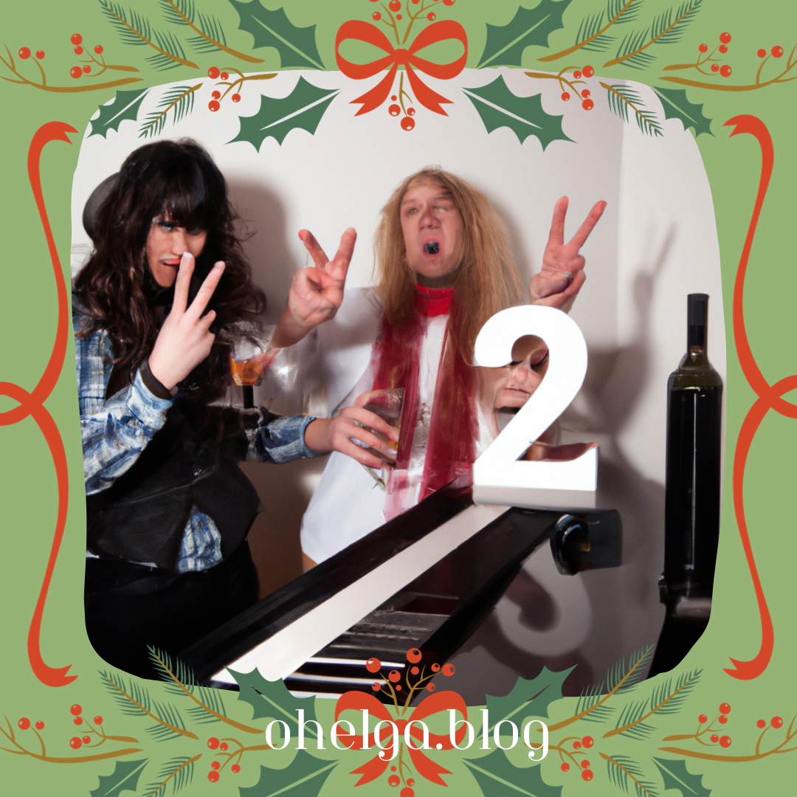

Årets första efterfestversion! Vem har somnat i soffan? Onko versio tarpeeksi korkea? Onko se tarpeeksi matala? Ja mikä on arvosana? I luckan: Högt och lågts version av O helga natt.
Årets första efterfestversion! Vem har somnat i soffan? Onko versio tarpeeksi korkea? Onko se tarpeeksi matala? Ja mikä on arvosana? I luckan: Högt och lågts version av O helga natt.
Kommentit / Kommentarer (6)
<p>Ganska sådär. Jag skulle inte bege mig till stan och lyssna på ett framträdande även om det vore fritt inträde. Men man anar att artisten har ett visst mått talang i alla fall.</p>
<p>Slisk! Släpigt och långt som fatiåren, som om den spelades på halvfart. (Jag trodde att det skulle komma en riktigt röjig efterfestversion men det var en version som får alla att slockna på festen i stället.) Fanns inte ens en ansats till tonen. Hellre tenorsnubbar alla gånger. Zzzzex (6).</p>
<p>Härligt med sågen! Ja, det är onekligen en seg efterfest de bjuder på, en man går till medan snöslasket faller och man ser det där roliga gänget försvinna mot annan efterfest med bubbel flaskorna i högsta hugg. Bättre lycka nästa lucka, får vi hoppas…</p>
<p>Någon ambition måste man nog ha för att våga ge sig på O Helga natt. Den här gången blev det såhär, vi får se vad du/ni tycker om nästa lucka istället: kanske den är en version som ni skulle ställa er i biljettkön för att se?</p>
<p>Förmodligen en glad amatör som spelat in den hemma vid datorn, och som sådan var det ju inte illa. Såg att han lagt ut flera jullåtar på samma kanal.</p>
<p>Nyfiken ändå på vem detta kan vara. Kanske hen ger sig till känna här?</p>